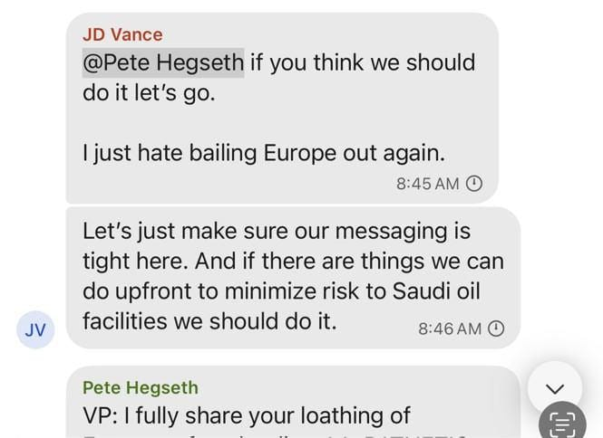

世界苦茶03月25日新闻 | 39条 | 特朗普可能再延后4月2日关税计划

特朗普可能再延后4月2日关税计划 | 美国高级军事官员误将记者拉入Signal群组 | 中日钓鱼岛争端再起 | 台湾插扣中国驳油船 透明茶室
三个水枪手
苦茶数据
美元兑人民币：7.26（昨日7.26，前日7.25）
美元兑日元：150.77（昨日149.76，前日149.33）
上证指数：3363（昨日3369，前日3364）
标普500指数：5767（昨日5667，前日5662）
比特币：86914（昨日85793，前日84302）
布伦特原油：72.97（昨日71.92，前日72.16）
中国新闻
• 日本华人形成中文经济圈 ：目前侨居日本的中国人多达84万，其中拥有长期居留权的中国人持续增多，现已超过33万。中国移民聚居东京及其周边多个地区，建立了不需日语也能轻松生活的“中国经济圈”。《日经亚洲》报道，30%中国侨民居住在东京23区，尤其集中于池袋、高田马场、新大久保等。池袋地铁站西北部地区已成为“新唐人街”，到处都有中国人经营的餐馆、超市、手机店。35岁的唐先生三年前移居日本东京，但仍只会说一点日语。他说：“我通常到池袋站北口的中国超市购物，池袋也有很多餐馆提供熟悉的中国料理……透过智能手机，可轻易找到中国人帮忙寻找住所、签订手机合约或申请驾照。”
• 中国严打芬太尼走私 ：中国海关总署星期一强调，中国海关始终保持查缉芬太尼类物质高压态势。海关总署以答记者问形式在官网上说：“中国海关坚持依法管控、综合施策，始终保持查缉芬太尼类物质高压态势。”海关总署续称，主要包括以下措施：加强芬太尼类物质走私风险分析研判，明确查缉重点，加大布控查验力度。充分发挥CT机、X光机等监管查验设备效能，优化升级智能审图算法，提高智能审图对夹藏走私的识别能力；对机检发现的可疑货物、物品，及时开展人查验，查缉夹藏、伪瞒报等行为。强化业务培训，持续提升关警员对芬太尼类物质的查缉能力，坚决筑牢芬太尼类物质海关口岸查缉防线。
• 上海新兵77%为大学毕业生 ：2025年上半年上海所征的新兵中，大学毕业生占比77%，创上海历史新高。据澎湃新闻星期一报道，近年来上海征兵工作突出大学毕业生，尤其是理工类专业大学毕业生和高技能人才征集。2025年上半年所征新兵中，各级各类毕业生占比78.39%，其中大学毕业生占比77%，均创上海历史新高。报道引述新兵上海交通大学2023级学生李朕翰说，参军入伍的机会来之不易，作为大学生，愿以所学知识服务国防和军队现代化建设。
• 丁薛祥将出席博鳌论坛 ：中国副总理丁薛祥将出席博鳌亚洲论坛2025年年会开幕式，并发表主旨演讲。中国外交部发言人郭嘉昆星期一主持例行记者会时宣布，丁薛祥将在星期四应邀出席在海南举行的博鳌亚洲论坛2025年年会开幕式，并发表主旨演讲。据新华社报道，博鳌亚洲论坛2025年年会将在星期二开幕，主题为“在世界变局中共创亚洲未来”。
• 中方否认杜特尔特寻求庇护 ：中国外交部否认菲律宾前总统杜特尔特曾向中国政府申请庇护。针对有记者询问有知情人士称，菲律宾前总统杜特尔特是否在被国际刑事法院逮捕前，向中国申请庇护，遭到中方拒绝，中国外交部发言人郭嘉昆星期一在例行记者会上回应时称，关于杜特尔特赴香港事宜，中国外交部驻港公署已做出了回应，菲律宾方面的有关人士也有表态。郭嘉昆指出，杜特尔特赴香港是私人度假行程，中方从未收到前总统杜特尔特及其家人向中国政府寻求庇护的申请。
• 中泰将举行海军联合训练 ：中泰两国将再次举行海军联合训练。中国国防部星期一在微信公众号宣布，中泰“蓝色突击-2025”海军联合训练将于3月下旬至4月上旬位广东湛江附近举行。中国国防部介绍，此次联训主要开展城市反恐战术、联合对海打击、联合反潜等内容训练。
• 中日钓鱼岛海域再起争端 ：日本军方通报，中国海警船连续四天驶入尖阁诸岛周边海域，并刷新在该海域逗留时长纪录。日本共同社引述日本海上保安总部第11管区星期天报道，三艘驶入尖阁诸岛周边海域的中国海警局船中，有一艘在当天晚上8时左右驶出该海域，进入外侧的毗连区，其余两艘船依然留在该海域。截至星期一，中国公务船连续四天驶入尖阁周边海域，也是今年以来第七天。中国公务船在该海域的逗留时长也改写日本政府2012年9月将尖阁诸岛国有化后的最长纪录，之前的最长纪录于2023年4月写下，为80小时36分。
• 央视将播习近平经济思想专题 ：中国中央广播电视总台、国家发展和改革委员会共同制作的14集大型专题节目《习近平经济思想系列讲读》，将在星期一晚上播出。央视称，这是首部系统阐释中共总书记习近平经济思想的电视专题片。据央视新闻星期天报道，《习近平经济思想系列讲读》将在央视网、央视新闻、央视频、央视财经同步播出，并称作为深入学习宣传贯彻习近平经济思想的重点专题，节目聚焦习近平关于贯彻新发展理念、构建新发展格局、推动高质量发展、发展新质生产力等重要论述。
• 刘世锦建议提养老金促消费 ：中国国务院发展研究中心原副主任刘世锦说，中国现阶段消费不足是结构性偏差问题。他建议，从提高农民养老金着手促消费，若能有效解决消费性偏差，消费就有望提供“不亚于房地产曾经提供过的新增长动能”，为中国经济持续稳定提供支撑。美国特朗普政府掀起贸易战，可能导致中国出口引擎哑火，中国国内消费因此必须挑起经济大梁。如何提振消费，也成为星期天在钓鱼台国宾馆举行的中国高层发展论坛分论坛讨论的焦点之一。刘世锦在“改革激发增长新动能专题研讨会”分论坛上分析，中国现阶段消费不足是结构性偏差，形成原因包括基本公共服务水平总体偏低且内部差距很大、城市化水平偏低且质量不高，以及收入分配差距较大等。 （翻评：提高农民养老金，是指一年20这样吗？）
亚太印太新闻
• 台扣查大陆无籍驳油船 ：台湾海洋委员会海巡署新竹海巡队船艇扣查中国大陆三无驳油船，阻断该船在海域为其他越界大陆船只补给。综合台湾《自由时报》和中时新闻网报道，新竹海巡队巡防艇星期天上午8时多，前往永安西北20海里处查处可疑目标时，发现一艘无船名大陆船舶，立即广播停船受检。经多次广播后，该船舶仍拒检并蛇行逃逸，海巡人员最终仍将该船舶带返台北港查处。海巡人员表示，该艘大陆船舶为涂抹船名的三无驳油船，即无船名、无船籍港和无船籍登记船舶，企图在海域提供其他越界大陆船只油料补给，船上装载约50万公升油料，船上六名人员均大陆籍人士，未携带任何身份证明文件，目前已押返台北港，留置调查中。
• 泰国反对派质疑佩通坦资历 ：泰国反对派在不信任动议首日质询首相佩通坦，指责她不具备资格，并受有权势的父亲、前首相达信操控。路透社报道，泰国反对派星期一在议会不信任动议辩论中，对佩通坦展开激烈质询，不仅指她资历不足，也指她允许有权势的父亲干预政府事务。人民党党魁那他蓬指出，佩通坦听从达信的指示。“我们有一个不在体制内的领导者……在没有任何问责机制的情况下左右政府政策。”
• 日本饭团涨价引发民怨 ：日本去年夏天闹米荒，货架上大米短缺，米价一直居高不下。日本全国超市大米平均零售价目前为5公斤3892日元，这要比去年6月的2000日元高许多。日本政府原本以为去年秋季新米上市后，短缺问题将得到解决，但现实并非如此。日本便利店卖的饭团已应声涨价。日前在便利店看见一名日本大学生拿起饭团，后来又放下转过去买面包，一问才知他觉得饭团贵。一名30多岁的日本家庭主妇说：“以前还可以买到100到120日元的饭团，现在都在200日元以上，挺贵的。”
• 菲美陆军联合军演启动 ：菲律宾陆军说，菲律宾和美国陆军士兵开展为期三周的联合军事演习，重点是领土防御和指挥大规模部队部署。路透社报道，约5000名菲律宾陆军和美国太平洋陆军士兵星期一参与今年“盾牌”演习第一阶段的作战和专业交流。第二阶段计划于今年晚些时候进行。菲律宾陆军在一份声明中说，演习将重点加强两国陆军的联合行动、大规模演习、实弹演习和领土防御。
• 尹锡悦涉案将于4月开庭审 ：韩国总统尹锡悦涉内乱案，定于4月14日正式启动庭审。韩联社报道，首尔中央地方法院刑事合议25庭，星期一就尹锡悦涉嫌带头发动内乱案举行第二次庭前会议，决定本案定于4月14日正式启动庭审。尹锡悦曾于2月底出席本案的第一场庭前会议，但这次并未到场。合议庭当天也接受由副总理兼企划财政部长崔相穆、外交部长赵兑烈出庭作证的检方申请。据了解，检方共邀请38人作为证人出庭。
科技新闻
• 苹果在华设清洁能源新基金 ：美国科技巨头苹果星期一称，将在中国启动新一期清洁能源基金，投资额高达7.2亿元人民币。苹果宣布这项消息之际，正值该公司首席执行官库克访华。苹果中国官网发布的声明称，苹果星期一宣布一笔新的投资基金，旨在扩大中国的清洁能源产能，这也是公司实现2030年将其供应链过渡到100%使用可再生能源的努力的一部分。声明说，苹果承诺投资高达7.2亿元人民币，以启动第二期中国清洁能源基金。
• 马国加强半导体监管应美压 ：出于美国施加的压力，马来西亚计划加强对半导体的监管。英国《金融时报》星期一发表马国贸工部长扎夫鲁的专访，扎夫鲁表明，华盛顿怀疑许多英伟达晶片在美国制裁下仍流入中国，要求马国密切跟踪英伟达晶片动向。他在采访中说：“美方要求我们确保对运往马国的每一批含有英伟达晶片的货物进行监控。他们希望我们确保服务器最终运送到指定的数据中心，而不是突然被转移到另一艘船上。”
• 台积电4月1日起接受2nm晶圆订单 年底月产能目标为5万片： 台积电 2nm 技术的良率达到 60%，可能很快就会进入全面生产阶段，它将从 4 月 1 日开始接受 2nm 节点的订单。由于需求高于 3nm 晶圆，许多客户正在排队等候，试图获得第一批晶圆。苹果可能是首个客户，该公司预计将在 2026 年下半年推出用于 iPhone 18 系列的 A20 芯片。目前有台积电高雄和宝山两家工厂专注于提高 2nm 晶圆的产量，目标在年底达到 50,000 片的月产能。
• OpenAI调整，CEO奥尔特曼聚焦研究和产品： OpenAI CEO萨姆·奥尔特曼将把更多精力转向技术层面，聚焦研究和产品。OpenAI将扩大首席运营官(COO)的职责，并将两位高管提拔至最高管理团队。OpenAI本周一宣布，COO布拉德·莱特卡普未来将承担更多日常业务运营责任，包括负责国际扩张以及与微软、苹果公司等企业的合作事宜。
财经新闻
• 特朗普将对委油加征关税 ：美国总统特朗普宣布，任何从委内瑞拉购买石油或天然气的国家，将在与美国进行贸易时被征收25%关税。路透社报道，特朗普星期一在社媒平台Truth Social发文，作出上述宣布。他说，这项“二级关税”将于4月2日生效。特朗普说，此举是基于委内瑞拉向美国派遣“数万”名非常暴力的人。
• 特朗普斯塔默通话谈贸易 ：英国首相斯塔默与美国总统特朗普通话，讨论英美贸易协议的“进展”。法新社报道，英国首相办公室发言人星期一说，斯塔默与特朗普星期天晚些时候进行简短通话，讨论关于经济繁荣协议的进展情况。首相发言人没有透露通话中是否提到削减数码服务税，但称英国只会“为了国家利益”达成协议。“我们将继续确保企业缴纳公平的税款，包括数码领域的企业。”
• 亚洲数据中心融资热潮 ：人工智能的发展正在推动亚洲数据中心的融资热潮，催生出一系列创纪录的贷款和更多潜在交易。彭博社星期一报道，在一个星期的时间里，两家主要的亚洲数据中心运营商获得了它们历来最大笔的贷款，部分是要用于扩大在马来西亚的业务。马来西亚正成为这些设施的一个枢纽。这些交易凸显了这个行业对银行到房地产等各类投资者的吸引力。它们还显示亚洲已成为数据中心热点的程度，房地产服务公司高纬环球的数据显示，到2028年，亚洲需求将以每年约32％的速度增长，超过美国的18％预期增长率。不过，美国的关税政策可能是这个行业的一个不确定因素。
• 印度将终止制造业激励计划 ：印度政府四年前启动刺激国内制造业发展的230亿美元计划，希望吸引企业从中国转向印度，但由于实施效果不佳，政府据报决定终止这项计划。路透社星期一引述四名政府官员的消息报道，印度总理莫迪政府推出的这项制造业扶持计划，不会扩展到14个试点行业之外，尽管一些参与企业提出要求，既定的生产期限也不会延长。公开记录显示，包括苹果公司供应商富士康和印度企业集团信实工业在内的约750家公司，签署了生产挂钩激励计划。富士康目前在印度雇佣数千名合同工。
• 白宫或延后特定行业关税 ：消息人士称，美国总统特朗普政府很可能在4月2日实施对等关税时，将不会宣布一系列早前提出针对特定行业的关税。根据《华尔街日报》报道，一名政府官员透露，目前不太可能在原定的4月2日宣布针对特定行业的关税，但白宫仍计划在当天公布对等关税，尽管计划仍不确定。彭博社上周末也报道称，美国政府将取消针对特定行业的关税。
• 中国召开房产市场形势会 ：中国房地产业协会将在本周召开房地产市场形势报告会暨全国一级资质房地产开发企业座谈会，以促进房地产开发企业了解宏观经济背景下房地产市场趋势。中国房地产业协会上星期二在官方微信公号发文称，为深入学习贯彻2025年中国全国“两会”和2024年中央经济工作会议和精神，促进房地产开发企业了解宏观经济背景下房地产市场趋势，探索房地产发展新模式，推动房地产市场止跌回稳，该协会定于星期四至星期五，在北京召开2025年房地产市场形势报告会暨全国一级资质房地产开发企业座谈会。中国房地产业协会称，参会人员有四类，包括全国一级资质房地产开发企业负责人及高、中级管理人员等。
• 中方欢迎外企扩大在华投资 ：主管经济的中国副总理何立峰星期天会见苹果、辉瑞等跨国公司负责人，并欢迎跨国公司扩大在华投资。中国商务部星期天深夜发消息称，何立峰当天傍晚会见苹果、辉瑞、博枫、美敦力、万事达卡、礼来制药、嘉吉、康宁等知名跨国公司负责人，就全球和中国经济形势、中美经贸合作、扩大对华投资等交换意见。何立峰表示，中国经济韧性强、潜力大、活力足，中国坚定不移推动高质量发展，扩大高水平对外开放，持续优化营商环境，欢迎跨国公司扩大在华投资，共享发展机遇。
• “三只羊”公司完成整改 ：中国安徽省合肥市市场监督管理局通报，去年9月陷入香港美诚月饼虚假宣传风波的三只羊公司已完成整改，具备恢复运营条件。据合肥市场监管微信公号消息，合肥市联合调查组星期天通报，调查组在去年9月26日通报合肥三只羊网络科技有限公司直播带货相关问题后，三只羊公司同年10月11日足额缴纳了罚没款6894.95万元人民币，对“香港美诚月饼”“澳洲谷饲牛肉卷”等涉案产品，已累计赔付2777.85万元，并继续按照应赔尽赔原则，执行退一赔三标准，做好退赔工作。
• 欧盟专员将赴美会谈 ：欧盟委员会发言人说，欧盟贸易专员舍甫科维奇将前往华盛顿，会见美国商务部长卢特尼克。路透社报道，欧盟贸易与经济安全专员舍甫科维奇将于星期二到访美国，会见卢特尼克和贸易代表格里尔。发言人拒绝提供双方讨论的细节。
俄乌战争
• 美俄在沙特会谈黑海停火 ：美国和俄罗斯官员在沙特阿拉伯开始会谈，华盛顿希望在达成更广泛的协议前，先达成黑海停火协议。路透社报道，美国和俄罗斯官员星期一格林威治标准时间早上7时30分在沙特阿拉伯首都利雅得开始会谈。这是继星期天美国与乌克兰会谈之后举行的。白宫称，会谈的目的是达成黑海海上停火，允许航运自由流动。
• 乌无人机袭俄油泵站引争议 ：俄罗斯国防部3月24日表示，乌克兰无人机袭击了位于克拉斯诺达尔边疆区隶属于里海管道集团公司的克鲁泡特金石油泵站。克里姆林宫发言人佩斯科夫说，尽管乌方违背有关针对能源基础设施停火的承诺，俄总统普京并没有改变先前向军方下达的不袭击乌方能源基础设施的命令。乌克兰武装部队总参谋部否认袭击上述设施，指责该事件系俄罗斯军队自己所为。佩斯科夫驳斥乌克兰说法“荒谬”。
其他新闻
• 美国高级军事官员通过Signal群组发送军事打击计划等敏感信息，群组中还包括《大西洋月刊》主编杰弗里·戈德伯格： 戈德伯格称，名为“胡塞PC小组”的群组中包括疑似副总统万斯、国防部长赫格塞思、国务卿鲁比奥、国家情报总监图尔茜·加巴德、国家安全顾问迈克·沃尔茨等人。信息中包括即将在也门进行的袭击，包括袭击目标、所用武器等。在戈德伯格收到信息两个小时后，美国确实对也门胡塞武装发动空袭。群组名称中的PC疑似指政府部门领导人委员会（principals committee）。除了战争计划以外，群组中还在3月14日讨论了为何要袭击胡塞武装。“万斯”认为美国远不如欧洲依赖苏伊士运河，公众不理解袭击的必要性，提议推迟袭击。“赫格塞思”指出，没有人知道胡塞武装是谁，因此需要将重点放在拜登失败和伊朗资助上。等待几周不会改变结果，但存在消息泄漏显得美国优柔寡断、以色列首先采取行动使美国丧失主动权的风险。“赫格塞思”认为袭击胡塞武装的原因包括恢复航行自由是美国的核心利益、重建拜登丧失的威慑力。“沃尔茨”也表示，需要由美国重新开放航道，并向欧洲人征收成本。“万斯”表示同意袭击，只是讨厌再次救助欧洲。名为“S M”、疑似是白宫副幕僚长斯蒂芬·米勒的人表示很快将向埃及和欧洲表明美国恢复航行自由所期待的回报。3月15日，“赫格塞思”分享了军事计划。戈德伯格认为，如果群聊是真实的，根据计划也门的首次爆炸将发生在两个小时后。1小时55分后，他检查“X平台”并搜索也门，发现首都萨那传来爆炸声。随后不久，“沃尔茨”也在群组中提供了最新情况，将行动描述为了不起的工作。
• 胡塞袭击致美船改道红海 ：美国国家安全顾问沃尔兹说，也门胡塞武装组织的袭击，迫使超过七成悬挂美国国旗的船只绕过红海，选择非洲南端漫长而昂贵的路线。法新社报道，沃尔兹星期天接受美国哥伦比亚广播公司节目采访时说，由于胡塞武装在红海上的袭击，如今75%悬挂美国国旗的船只不得不绕过苏伊士运河航道，取道非洲南部海岸的航线。沃尔兹说：“上一次我们的驱逐舰通过那里红海的海峡时，遭到23次袭击。”
• 鲁比奥通电内塔尼亚胡 ：美国国务卿鲁比奥与以色列总理内坦亚胡通电话，讨论以色列在加沙的军事行动。综合路透社和法新社报道，美国国务院星期天说，鲁比奥在与内坦亚胡的通话中讨论了以色列在加沙的军事行动。当天早些时候，以军对加沙南部汗尤尼斯一家医院发动空袭，造成包括一名哈马斯政治局成员在内的五人死亡。
• 埃及提出阶段性停火新方案 ：埃及据报已提出新的加沙停火提议。路透社援引消息人士报道，埃及上周建议哈马斯每周释放5名人质，以换取以色列在第一周后实施第二阶段的停火。埃及的提议还包括用释放所有人质的时间表换取以色列从加沙全面撤军的时间表。美国和哈马斯均同意该提议，以色列尚未作出回应。新华社援引消息人士报道，埃及提议要求哈马斯释放5名人质，其中包括一名拥有以色列和美国双重国籍，换取在加沙停火40天，为恢复停火协议第二阶段谈判做准备。哈马斯已表示同意该提议。美联社援引埃及官员报道，埃及提出哈马斯释放5名人质换取数周停火。以色列还需要释放数百名巴勒斯坦囚犯，允许人道主义援助进入加沙。哈马斯对该提议作出积极回应。埃及的停火提议尚未得到官方证实。哈马斯官员称，正在与斡旋方讨论多项提议，以弥合分歧并恢复谈判，为开启第二阶段停火协议铺平道路。
• 内塔尼亚胡批国安局越权 ：以色列总理内坦亚胡指责安全局局长未经同意下，调查极右翼国家安全部长本·格维尔，并指出此举意图推翻政府。法新社报道，内坦亚胡星期一发声明说：“关于总理授权国家安全总局局长巴尔收集本·格维尔部长相关证据的说法，完全是又一个被揭穿的谎言。”声明也说：“这份被公开的文件中，包含安全局长明确指示收集针对政治领导人的证据，令人联想到黑暗政权。这破坏民主，意在推翻右翼政府。”
• 澳大利亚提前拨款强军 ：澳大利亚计划在联邦预算中提前拨付10亿澳元的国防开支，以提升军事能力。路透社报道，澳大利亚国防部长马尔斯星期一宣布，政府计划在星期二的联邦预算中，提前为国防开支拨款10亿澳元。澳洲政府计划在未来四年，将联邦预算中的国防开支增加106亿澳元，以配合此前宣布的10年内国防开支增加500亿澳元计划。
• 土耳其拘千人镇压反政府抗议 ：伊斯坦布尔市长伊马姆奥卢被拘后，土耳其街头已连续5晚爆发基本和平的反政府示威活动，有数十万人参与。土耳其内政部3月24日称，各地已拘留1133名抗议者，有123名警察在抗议活动中受伤。土耳其记者联盟表示，被拘者中包括报道抗议活动的9名记者。尚不清楚记者被拘原因。
• 伊朗愿与美间接谈判 ：在美国总统特朗普发出达成新核协议的最后通牒后，伊朗称愿意与美国进行间接谈判。法新社报道，伊朗外长阿拉格齐星期一说：“间接谈判的大门是敞开的。”不过，他拒绝与华盛顿进行直接谈判，“除非对方对伊朗的态度发生改变”。
• 格陵兰总理批美访问挑衅 ：格陵兰领导人批评美国代表团即将访问格陵兰岛的行为，称此举是在“挑衅”。路透社报道，即将卸任的格陵兰总理埃格德星期一说，美国本周的访问是“挑衅”，并称他的看守政府不会与美国代表团会面。“直到最近，我们还可以信任美国人，他们是我们的盟友和朋友，我们也一直与他们保持着密切合作，但那个时代已经结束了。”
• 被美国驱逐的南非驻美大使易卜拉欣·拉苏尔3月23日返回南非，受到数百名支持者的欢迎： 拉苏尔表示，将会把“不受欢迎的人”当作尊严的徽章，回家虽不是他们的选择，但也并无遗憾。他表示，在美期间已尝试外交手段，但未能取得预期成果。在外交中不能牺牲真相以及国家的尊严和主权，不能由美国告诉南非谁是朋友或敌人。拉苏尔坚持自己在外交政策研讨会上对政治现象的分析。